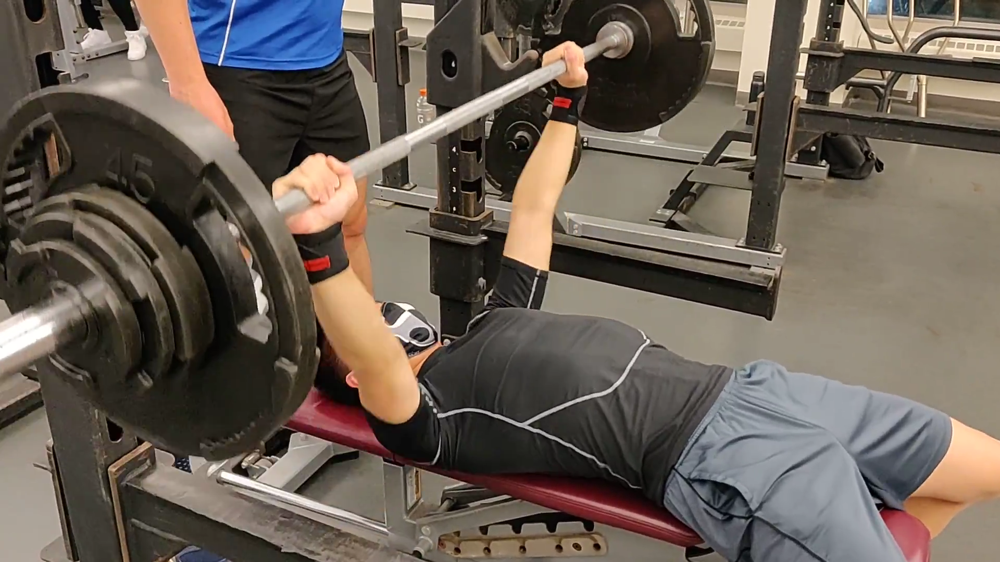
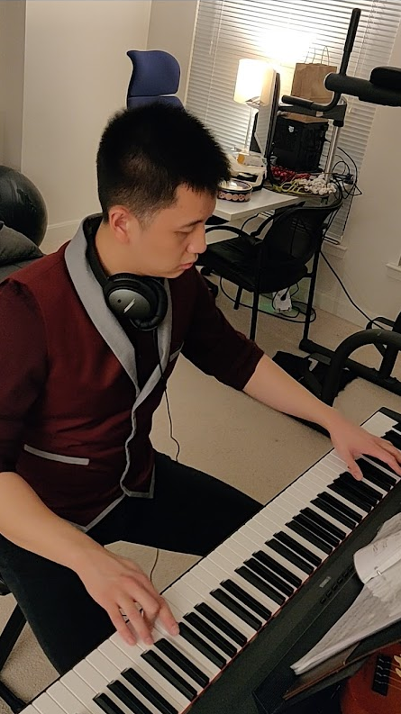
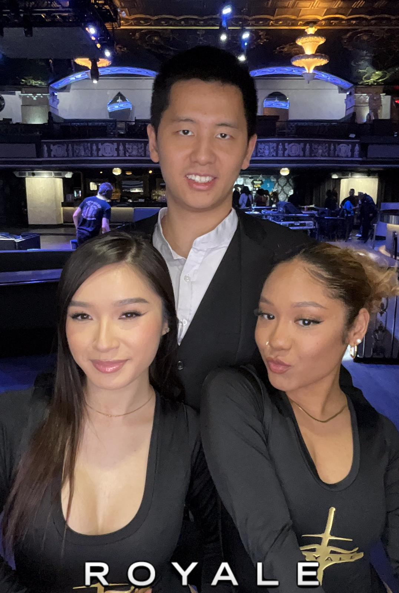
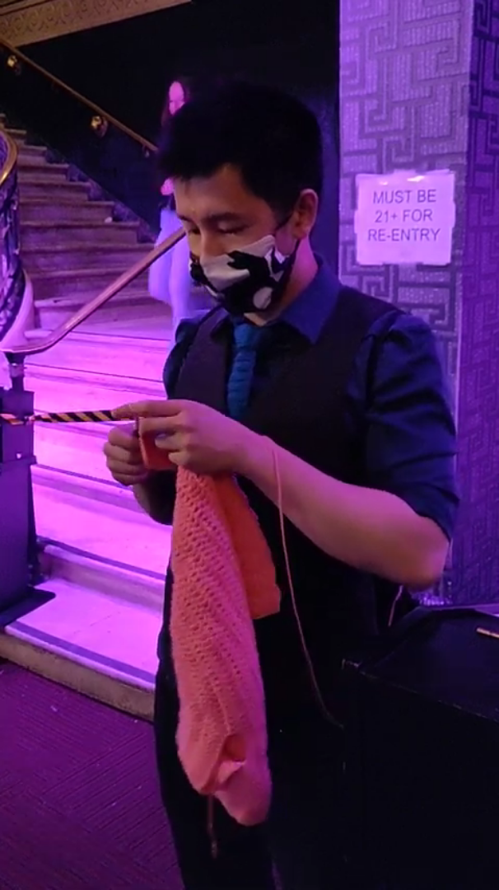

1. Indigo Ag
Indigo Ag is the perfect cross section between my Chemical Engineering and Data Engineering careers. With the hindsight of a data engineer, I would've loved to handled my research data in MIT with better technology. This opportunity with Indigo puts me in the role of a Data Engineer to help manage the data of what a chemical engineer would produce.
My work in the biologicals section of Indigo Ag aids researchers on their research on the effect of microbes on plants. With tens of gigabytes of research data generated across tens of employees, data storage and integrity is a much bigger deal than the relatively small volume of data that I personally produced as a graduate student.
Concurrent with my work at PatientsLikeMe, a large part of my responsibility is to keep up with the infrastructure for my team. Creating new tables and views, upgrading the AWS hosted database, dropping slow queries, and managing access are all part of the daily responsibilities.
One particular component of my work at Indigo Ag that is quite unique to PatientsLikeMe is the emphasis of data integrity and quality checks. With the numerous researchers that contribute data to the database, quality checks are written to ensure maximal consistency, with sufficient adaptability to account for the differences in each colleagues experiments. I personally maintain two webapps to facilitate the upload and qualitcy checks of data for this role!
Again, I'm going to keep my mouth shut about the confidential aspects of Indigo Ag's work. If you want to learn everything that you can, Feel free to visit Indigo Ag for a more official and clear perspective.
2. Pole Dancing
Leveraging my past background in Ballet and Taekwondo, I've decided one day that Pole Dancing was the logical next step in my pursuit of hobbies. The net result, of course, is that this the next best thing that's about to happen for me.
I'm not the resident expert in pole dancing here, but it takes strength, flexibility, courage, grace, and a lot more to get into pole, and I've had my encounters with all of the above in various hobbies. Aside to the aforementioned Ballet and Taekwondo, a lot of the resistance training that I've subjected myself to, the performance aspect of playing the piano, and just the general persistence of getting a PhD are all things that contribute to this new hobby.
I've brought up the ballet thing in relation to pole a couple times. I personally feel really strongly about this connection. I started ballet as a child at six years old; and young Lawrence didn't realize that it would become a source to become bullied. Being a boy in a girly hobby could spell trouble in the face of mean six year olds.
I'd try to lay low about my hobby, but every few years, there would be a "ballet scandal", where my hobby gets brought up again and I'd be the subject of bullying by the boys. Around fifteen years old, something seemed to have changed, and there would be a new attitude towards me and ballet, where classmates (girls for the most part) that recently learn about it would consider it a cool trait that I have.
Despite their change in attitude, I wouldn't catch on for a while. I left Hong Kong, quit ballet, thinking that it would no longer burden me with these bullying outbreaks.
And ten years later, I've learned a lot about dancing as a man; and with a new attitude, I'm rebooting the dance career in pole dancing, which is also commonly considered as feminine. So far, I'm loving the support from my friends!
3. Power Lifting

Did you know my mother is the chairperson of the Hong Kong Weightlifting and Powerlifting Association?
That would make me the second Dr. Lai to enjoy lifting as a hobby. Except I'm no pro like my mother. She runs tournaments, teaches the technique, holds records, and participates in international events. I'm a filthy casual at best.
And that's completely okay! I don't have to be highly accomplished at all my hobbies. This is my pursuit for strength; for the raw power that I never had when practicing Taekwondo.
I started at a cowardly 45lbs in my bench press in 2017 like everybody else. As of early 2022, I'm all the way up to 190lbs.
I'd like to reach 225lbs by the end of 2022, reach that two plate milestone. It's going to be a tall order from here on out, but with the correct workout and nutrition, I might just make it.
4. Piano

The 2020 pandemic brought out the third coming of my piano hobby. In the midst of a lockdown, I was fortunate enough to be able to revisit my old hobbies.
My first exposure to piano as a child was at the age of 4. At the time, my older brother was quite the pianist himself, and I imitated his progress throughout my childhood, lagging quite precisely three years behind.
I wasn't very diligent at practicing, unlike my older brother. There was a little bit of drama surrounding me and the piano. The net result of it was that I started following a different instructor, played mostly the same pieces (mostly classical romantic), and peaked out at 15 years old, when I left Hong Kong (You might find another hobby on this website where I did the same thing).
My second encounter with the piano was in University of Michigan, around 2011-2012, where I started meeting classmates and colleagues that were piano enthusiasts themselves, and would spend their AM hours practicing in the school of music. I was assimilated to that culture, playing mostly classical pieces (A lot of Mozart), and further enhanced my mechanics on the piano. I stopped this time around because I fell off a bike and broke my wrist.
And now, in 2020 through present, I present the third coming of my piano. A few differences between this run and the past is that I would arrange my own music. In 2020, this would be Cantonese pop, but I've mostly found my niche in video game music these days. I've played tunes from Celeste, Undertale, Genshin Impact, Katana Zero, Portal, Hollow Knight, Mario Kart, and more!. I wish to relive all these video game masterpieces through my own hands on the piano.
5. Boston Night Life


Since leaving MIT, I was forced to come to terms with the difficulty life presents with regards to developing a rich social life. Whereas a school environment provides ample opportunities to interact with strangers and build a wider network of similar background and interest, Boston's night life scene replenishes these missed chances, and allows my network to be cast even wider to individuals of any background.
Home to Whiskey Saigon (recently closed), and later Royale, I occassionally take the role of a promoter, but always an active visitor to Royale. A well developed social calibration is certainly part of my grand life goal of acquiring more skills.
Fast forward to post pandemic, I've taken the new role as the host of Royale. It's a glorified word for a position where I bring VIPs to their tables, direct our guests to the correct places.
I have a certain friend, Dr. Dwyer, that would call me a Professional Charmer for being in this role. I like it, and I'm going to live it.
In all seriousness though, the night club is the main source of my friendship, and I would live in infinite regret without getting into this.
6. PatientsLikeMe

Coming out of Insight's Data Engineering cohort as of September 2019, I joined PatientsLikeMe to better the lives of individuals through handling patient generated health data voluntarily collected by users of the PatientsLikeMe website, and to further test my skills in this new area of life.
My responsibilities in this company involve setting up any data related infrastructure for the operation of other teams, including upcoming features, old processes, as well as privately distributed web tools.
While I am not qualified to speak for PatientsLikeMe as a whole, I have personal faith in the potential of PatientsLikeMe to help discover treatment methodologies to patients, as well as bolstering the information clarity of our site's users (patients or caretakers) to encourage better decision making.
In the interest of not getting fired, this is as much as I will say on my personal website. Feel free to visit PatientsLikeMe for a more official and clear perspective.
7. Insight Data Engineering Fellow
To reorient my academic skills in a more industrially relevant setting, I joined the Insight data engineering fellows program as of June 2016. I've observed the potency of Data Science and Data Engineering in the modern world, and I would like to leverage my engineering skills from MIT to participate in an industry with high demand for employees.
Integrating Insight's data engineering training with my personal passion towards video game media, my project analyzes chatrooms of Twitch TV , a popular video game broadcasting platform. Twitch TV's chatrooms have traffic up to 150-200 messages per second; analyzing the messages of each chatroom, identifying their traffic, and analyzing the sentiment of the viewers within the set of [neutral, laughing, disappointed, question] provides valuable quantitative information surrounding a channel's performance based on audience interaction
The end goal of this project is to be able to analyze the chat messages of over 100 chatrooms in real time. The data engineering aspect of this goal lies in the sheer volume of chat messages that are being outputted in Twitch TV's platform; the analysis, clean up, and classification of the vast volume of messages is a job for many computational units in parallel, a common design consideration for data engineers. In the end of this project, I am looking to use Apache Kafka for my data ingestion and analysis, and PostgreSQL for database structure and management.
Please visit my Github repository for more information on my project.
8. MIT Research Overview

With the continued increase in energy demand, the OPEC World Oil Outlook expects Crude Oil Consumption to increase by millions of barrels per day twenty years from now. To accomodate the ever increasing demand on oil, the world will eventually tap into heavier oil sources.
To better utilize heavier oil sources, heavy crude must be upgraded to form lighter hydrocarbons and to remove heterocompounds in order to 1. enable cleaner combustion, 2. meet environmental standards, and 3. achieve appropriate flow properties.
My work focuses on pyrolysis of alkylbenzenes in conditions similar to crude oil upgrading to model the behavior of alkylaromatic compounds in crude oil during crude oil upgrading process conditions.
Reaction Mechanism Generation

In this work, hexylbenzene is used as a model compound to study the reactions of alkylaromatics due to its appropriate size and structure. In the pyrolysis of hexylbenzene, up to 500 products can be generated in the short span of 40 minutes. With so much information off a single data point, and additional missing information due to reactive intermediates, unstable radicals, and multiple pathways leading to identical compounds, conventional means of experimental studies are not sufficient to understand the pyrolysis of alkylaromatics.
Instead, the Green Group Reaction Mechanism Generator (RMG) is used to predict the reactions of hexylbenzene. The reaction mechanism generator uses a flux base algorithm that searches for highest flux reactions, and adds these reactions to the core of the model generation. Added reactions expand the number of core species and enable further reactions to take place, thus recursively expanding the reactive environment of the model until no reactions meet a tolerance criteria, thus terminating the model generation.
Database Maintenance

While the concept of RMG is novel, there are many practical aspects that limit the capabilities of RMG. One such is the limited database of RMG; for many species in the hexylbenzene mechanism, thermochemistry estimates are of insufficient accuracy that would adversely affect yield predictions. Likewise, many reaction families contain inaccurate or incomplete data and cause erroneous reaction pathways to take place over ones that more closely resemble the truth.
Part of my research involves doing calculations under the CBS-QB3 level of theory to maintain and expand the database of RMG to ensure thermochemistry and kinetics estimations that are as accurate as possible. Database maintenance also occassionally involves restructuring of old and inefficient structures to more efficiently make use of newly accquired data.
Experimental Confirmation
To ensure phsycial significance of generated reaction mechanisms, generated alkylaromatic models are compared towards experiments. In my research, I perform batch reactor experiments under high temperature and pressure to study the behavior of alkylaromatic pyrolysis, and analyze the product compositions and attempt to draw similarities or differences with my models.
Hardware Maintenance

To ensure accurate experimental conditions and analysis, much of my labwork boils down to maintaining hardware in the lab.
In the Green Lab, there are multiple units of gas chromatography instrumentation that require maintenance. These could range from the replacement of inlet liners, all the way to helping the installation of a modulator in order to perform two dimensional GCxGC.
I also help build and maintain lab equipment. Most commonly, I handle SITEC and Swagelok fittings while building new batch reactors and assemble glassware for distillation, but I have had past experience working with flow reactors containing crude oil (it was tedious), and other simple apparatus.
Software Development
Not particularly my strong suite, but at times, RMG code requires maintenance that is beyond the scope of database maintenance. Occassionally, I would also fix parts of RMG code. My past achievements include changing fitting functions, screening for inadequate hindered rotors, and other simple tests to ensure proper functionality of RMG.
9. Taekwondo

In the past, I devote a significant portion of my time in Taekwondo. I have had days where I practiced 10-12 hours a week, but due to my current commitment to work, as well as other physical limitations, I have moved on to pursue other athletic goals that compliment with taekwondo.
The Flow Experience
In the past, I have derived the flow experience from playing the video game Taiko no Tatsujin. This game encompasses both coordination and physicality. However, as a result of my migration to the United States, the availability of this game has been limited, and I have been in a new pursuit for the flow experience. I have chosen Taekwondo, as it encompasses the same skills (coordination and physicality), and pushes me to much greater limits in both aspects.
Leadership in Taekwondo
I joined MIT Sport Taekwondo in February of 2016. As of Summer of 2018, I have achieved the rank of 1st Dan Black Belt, and also took leadership of MIT Sport Taekwondo as its president. Throughout my course of predience, I have secured the largest incoming class to our team, as well as organized a tournament and changed parts of the infrastructure of the team. My role was short lived, as I quickly found myself in a position where I must refocus on my academic work at MIT.
10. Hong Kong Student Society

As an individual who spent his first fifteen years of his life growing up in Hong Kong, I fully embrace the culture of Hong Kong and love to proudly share this joy to others. Carrying these emotions, I have taken the role of the President of MIT's Hong Kong Student Society in 2015-2018 in order to foster relationships between Hong Kong Students, as well as spread the culture of Hong Kong to foreigners.
Fostering Student Relationships
The primary purpose of the Hong Kong Student Society is to ensure meaningful relationships between Hong Kong students form within MIT. In a place ten thousand miles far from home, our proud language of Cantonese, our mixed eastern and western traditions, and our unique obsession to karaoke could be lost to the intense study environment and the ever so diverse environment of MIT. Part of the Hong Kong Student Society's purpose is provide a second home to students of Hong Kong, and to remind students who have traveled far to pursue education where we came from.
Spreading Hong Kong Culture

As an organization from Hong Kong, the Hong Kong Student Society brings its Dim Sum, Cantonese culture, and pop references and incorporates them into the diversity of MIT, making our surroundings greater than the sum of Hong Kong's culture and MIT's. Our organization tightly embraces the notion of welcoming students of other ethnicities to experience our culture.
Manufacturing Opportunities
The Hong Kong Student Society also welcomes many guests as part of our organization's operation. Some of them include the Hong Kong Government, various political parties, Hong Kong journalists and Professors. We invite all guests to share their views to enlighten the general body of MIT students, as a learning experience through diversity.